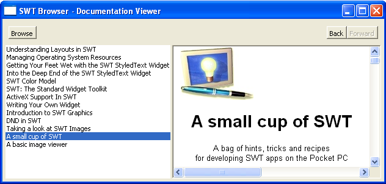

| Eclipse Corner Article |

Summary
This article explains how to add HTML viewing capability to an SWT application. The Browser widget provides an easy way to integrate rich HTML content into your application.By Christophe Cornu, IBM OTI Labs
August 26, 2004
HTML has evolved considerably since 1990. Web designers and artists take advantage of some of the sophisticated extensions supported by today's popular browsers. Cascading Style Sheet (CSS) in particular is unleashing even further the flexibility of HTML. User documentation and contextual help are prime candidates to leverage the hyperlink navigation metaphor and rich HTML rendering. The SWT Browser widget embeds a platform's popular HTML rendering engine: Internet Explorer on a Microsoft® Windows® platform, Mozilla on Linux®, Safari on the Mac. It provides the capability to integrate HTML rendering into a Java™ application. This widget is part of SWT starting with the 3.0 release.
Let's get started. We will implement an application that lists all the HTML documents present in a folder selected by the user. Selecting an entry in this list will cause the document to be displayed in the Browser widget (Figure 1).
The following sample HTML documentation viewer allows the user to select a topic from the table of content. The corresponding documentation is displayed.

Figure 1 - Documentation Browser sample application
The user selects the directory containing HTML documents by clicking the Browse button at the top. The list on the left is populated with the titles of the HTML documents. Clicking an item in the list displays the corresponding document in the Browser widget on the right.
The first task is to create an instance of the Browser widget.
The Browser widget binds to a suitable native HTML rendering engine for the platform it is running on (Internet Explorer on Windows, Mozilla on Linux, Safari on the Mac; the Eclipse SWT FAQ page lists the prerequisites for running the Browser widget on a particular platform). The constructor of the Browser widget throws an SWTError if a suitable native HTML rendering engine is not available. An application could trap this exception and degrade gracefully by disabling features that require the Browser widget.
import org.eclipse.swt.browser.*;
...
Browser browser;
try {
browser = new Browser(shell, SWT.NONE);
 } catch (SWTError e) {
MessageBox messageBox = new MessageBox(shell, SWT.ICON_ERROR | SWT.OK);
messageBox.setMessage("Browser cannot be initialized.");
messageBox.setText("Exit");
messageBox.open();
System.exit(-1);
}
} catch (SWTError e) {
MessageBox messageBox = new MessageBox(shell, SWT.ICON_ERROR | SWT.OK);
messageBox.setMessage("Browser cannot be initialized.");
messageBox.setText("Exit");
messageBox.open();
System.exit(-1);
}
In this snippet, the application detects if the constructor of the Browser widget throws an SWTError the first time it is instantiated. It warns the user the application cannot be initialized and exits. If no
the first time it is instantiated. It warns the user the application cannot be initialized and exits. If no SWTError has been thrown, the Browser widget is ready to display HTML content. The next step is to set the content of the Browser every time an item is selected in the List.
The Browser displays the HTML document related to the entry the user selected in the List. The method Browser.setUrl is used to navigate to a specific URL. It takes a java.lang.String argument that defines the new URL to navigate to.
String[] urls;
int index;
Browser browser;
...
List list = new List(parent, SWT.SIMPLE);
list.addListener(SWT.Selection, new Listener() {
public void handleEvent(Event e) {
int index = list.getSelectionIndex();
browser.setUrl(urls[index]);
}
});
Browser.setUrl posts a request to change the location. Location loading and the actual rendering (drawing) are handled asynchronously by the underlying native engine. An application registers specific Browser listeners to track - and act upon - the different stages of a request.
posts a request to change the location. Location loading and the actual rendering (drawing) are handled asynchronously by the underlying native engine. An application registers specific Browser listeners to track - and act upon - the different stages of a request.
 It is also possible to render HTML from an in-memory string with the method
It is also possible to render HTML from an in-memory string with the method Browser.setText. Browser.setText takes a Java String containing HTML tags. The encoding is implicitly Unicode since a Java String is itself in Unicode. The example below does not specify the HTML meta tag charset as a result.
browser.setText("<html><body>This is Unicode HTML content from memory</body></html>);
The Browser widget provides listeners to monitor when a location is actually changed, when a page is completely loaded, and what title needs to be displayed for the current document. Before we take a deeper look at these listeners, we will explore the history navigation.
The user can navigate back and forth between locations already visited. The user interface of the documentation viewer defines two buttons Back and Forward, for this purpose. The snippet below describes how to provide tool items to navigate the location history of the Browser.
final ToolItem back = new ToolItem(navBar, SWT.PUSH);
back.setText("back");
back.setEnabled(false);
final ToolItem forward = new ToolItem(navBar, SWT.PUSH);
forward.setText("forward");
forward.setEnabled(false);
back.addListener(SWT.Selection, new Listener() {
public void handleEvent(Event event) {
browser.back();
}
});
forward.addListener(SWT.Selection, new Listener() {
public void handleEvent(Event event) {
 browser.forward();
}
});
browser.forward();
}
});
The excerpt above creates two tool items. The Browser widget provides the methods Browser.back and
and Browser.forward to navigate, respectively, back and forward in its navigation history. Each tool item activates a back or forward method when it is selected by the user. Since there is no navigation history when the Browser is created, the two tool items are initially disabled. Their state is updated with the code below.
to navigate, respectively, back and forward in its navigation history. Each tool item activates a back or forward method when it is selected by the user. Since there is no navigation history when the Browser is created, the two tool items are initially disabled. Their state is updated with the code below.
LocationListener locationListener = new LocationListener() {
public void changed(LocationEvent event) {
Browser browser = (Browser)event.widget;
back.setEnabled(browser.isBackEnabled());
forward.setEnabled(browser.isForwardEnabled());
}
public void changing(LocationEvent event) {
}
};
 browser.addLocationListener(locationListener);
browser.addLocationListener(locationListener);
When the Browser has navigated to a new location, the navigation history stores the previous location. The state of the back and forward buttons can change every time the Browser has moved to a different location. Tracking location changes is done by implementing the org.eclipse.swt.browser.LocationListener interface. The method LocationListener.changed is invoked by the Browser widget every time it has moved to a different location, such as when the user activates a hyperlink or when the application requests that the Browser navigate to a different location. The methods
is invoked by the Browser widget every time it has moved to a different location, such as when the user activates a hyperlink or when the application requests that the Browser navigate to a different location. The methods Browser.isBackEnabled and Browser.isForwardEnabled return the actual state of the navigation history. The LocationListener must be registered with the Browser .
.
 It is possible to filter and block a document that is about to be navigated to.
It is possible to filter and block a document that is about to be navigated to. LocationListener defines another method: changing . This notification is sent before the target location defined in the
. This notification is sent before the target location defined in the LocationEvent begins loading. The argument LocationEvent in the method changing contains a doit flag. Setting this flag to false prevents the LocationEvent.location target from being loaded.
The navigation history is now taken care of. There is just one more piece left to implement in order to have a working HTML document viewer. The next section deals with the initialization of the table of contents used to access the actual documentation.
The table of contents provides entry points to major aspects of a document. It is often generated along with the documentation and stored in a variety of formats (XML, plain text, etc.). The following snippet generates a table of contents dynamically by storing the URL and the title of the HTML files found in a particular folder. This naive approach suits the needs of our simple HTML doc browser example.
static String[] urls;
static String[] titles;
static int index;
...
TitleListener tocTitleListener = new TitleListener() {
public void changed(TitleEvent event) {
titles[index] = event.title;
}
};
The application implements a TitleListener to obtain the title of the document that is currently displayed by the Browser. This title corresponds to the string typically displayed in the decoration of a Browser application and is usually related to the title tag found in the HTML document. Certain Browser applications may send a default value before the title tag has been parsed, such as the filename, or fire a new title event every time the value of the title tag is modified, such as when a JavaScript is executed that changes the title node. Our sample application will store the value of the title as it was reported by the Browser when the document was completely loaded. The application implements a ProgressListener in order to be notified when the current document is completely loaded.
ProgressListener tocProgressListener = new ProgressListener() {
public void changed(ProgressEvent event) {
}
public void completed(ProgressEvent event) {
Browser browser = (Browser)event.widget;
index++;
boolean tocCompleted = index >= titles.length;
if (tocCompleted) {
browser.dispose();
...
return;
}
shell.setText("Building index "+index+"/"+urls.length);
 browser.setUrl(urls[index]);
}
};
browser.setUrl(urls[index]);
}
};
The ProgressListener provides two methods. The method changed is often called multiple times to report progress as the document and some of the content it references get loaded (images for example). It is meant to be used to animate the progress bar found in a browser application. The method
is often called multiple times to report progress as the document and some of the content it references get loaded (images for example). It is meant to be used to animate the progress bar found in a browser application. The method completed is invoked when the current document has been completely loaded.
is invoked when the current document has been completely loaded.
The following sequence occurs when building the table of contents. The first document is loading. The title is retrieved through the TitleListener notification. When the document has been loaded , it is time to move on to the next document with a call to
, it is time to move on to the next document with a call to Browser.setUrl . The table of content is completed when all documents have been loaded and their titles retrieved. The Browser is disposed
. The table of content is completed when all documents have been loaded and their titles retrieved. The Browser is disposed . The application can initialize the user interface displaying the table of contents and create the Browser to render the document selected by the user.
. The application can initialize the user interface displaying the table of contents and create the Browser to render the document selected by the user.
Figure 1 shows an example using a List widget for the TOC on the left side, separated by a Sash from a Browser instance on the right.
The TitleListener and ProgressListener still need to be registered. This is done after the user selects a folder containing HTML files as implemented in the code below.
DirectoryDialog dialog = new DirectoryDialog(shell);
String folder = dialog.open();
if (folder == null) return;
File file = new File(folder);
File[] files = file.listFiles(new FilenameFilter() {
public boolean accept(File dir, String name) {
return name.endsWith(".html");
}
});
The final touch:
urls = new String[files.length];
titles = new String[files.length];
index = 0;
for (int i = 0; i < files.length; i++) {
try {
String url = files[i].toURL().toString();
urls[i] = url;
} catch (MalformedURLException ex) {}
}
shell.setText("Building index");
browser.addTitleListener(tocTitleListener);
browser.addProgressListener(tocProgressListener);
browser.setUrl(urls[0]);
Each File instance is converted into a String representing its URL . The process of building the table of contents requires registering the
. The process of building the table of contents requires registering the TitleListener  and
and ProgressListener  implemented above. The first document is opened with the call
implemented above. The first document is opened with the call Browser.setUrl .
.
The full source code for DocumentationViewer.java is here.
Documentation and contextual help benefit from the powerful HTML capabilities of today's popular browsers such as Internet Explorer, Mozilla and Safari. The Browser widget allows you to leverage the latest HTML standards and to integrate rich HTML content into your application.
The WorldWideWeb Browser - Tim Berners-Lee Where it all started, not so long ago.
SWT Browser FAQ Platform requirements for the Browser widget.
BrowserExample (included with the Eclipse Example Plug-ins) An Eclipse plugin browser based on the Browser widget.
news://news.eclipse.org/eclipse.platform.swt The SWT newsgroup is a good place to ask and discuss about the Browser widget.
Zen Garden - The Beauty of CSS Design A visual proof of the extraordinary versatility of CSS - same HTML content rendered with different CSS scripts.
Thanks to John Arthorne from the Eclipse Platform Core team and Jim des Rivières at OTI Labs for proof reading and providing feedback for this article.
Java and all Java-based trademarks and logos are trademarks or registered trademarks of Sun Microsystems, Inc. in the United States, other countries, or both.
Microsoft and Windows are trademarks of Microsoft Corporation in the United States, other countries, or both.
Linux is a trademark of Linus Torvalds in the United States, other countries, or both.
Other company, product, and service names may be trademarks or service marks of others.